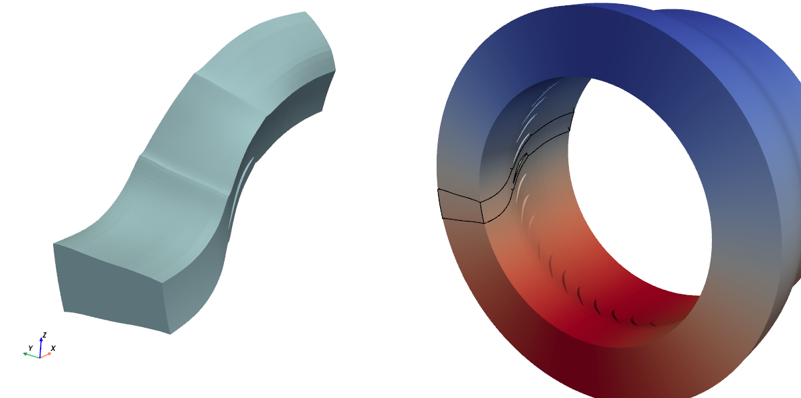

Your first workflow
This tutorial will teach you how to chain functionalities to create a simple workflow. Based on a real CFD case, the objectives are to demonstrate how Maia simplifies distributed mesh operations and to provide a solid foundation for creating your own parallel CGNS workflows.
Our use case involves a Rotor37 geometry mesh. The input mesh is available in different sizes; please download one from the table below. The illustrations on this page were created using the medium-sized mesh.
Light |
Medium |
Large |
|
|---|---|---|---|
Initial cell size |
~60K |
~200K |
~21M |
File size |
6 MiB |
16 MiB |
1 GiB |
(Final cell size) |
~2M |
~7M |
~762M |
Download link |
Then, ensure you have access to a valid installation of maia and create
an empty file 02_workflow.py.
You will complete this file as you work through the tutorial; look out for
instructions preceded by the symbol ✏️.
Tip
During the experimentation phase, we advise you to use a light mesh and a low number of processes, especially if you are displaying data. Once the script is ready, you can use more processes and move to larger meshes.
Objective and plan
The aim of the workflow is to recombine a complete 360° mesh from the input angular section, with a data field initialized on it:
{kind=link}

Initial (left) and expected final (right) mesh, colored from VelocityY field. Black lines
show the initial angular section position.
We precise that we expect to have a single Zone_t node on the 360° mesh.
👉 Before starting to code, let’s see what will be needed. Open the User Manual and answer the following questions:
❓ Which function(s) you will need to use ?
Hint : try to search 360 or duplicate in the search bar
The main functions you are going to use are :
duplicate_from_rotation_jns_to_360()to duplicate the input mesh,merge_zones()(or equivalent) to merge the resulting zones in a single one.
In addition, you will need some PT functions to create and store the initial field, as well as
the standard maia.io functions.
❓ Will you need to work on a partioned view of the input mesh ?
All the functions mentionned above operate on a distributed tree. Thus, partioning the tree will not be necessary.
❓ When should you create the initial field ?
You can create the initial field anytime in your workflow, but it is probably more efficient to do it before the duplication (since there will be more cells to compute after).
👉 Last step: it is a good practice to quickly check the input mesh, eg with maia_print_tree:
CGNSTree CGNSTree_t
├───CGNSLibraryVersion CGNSLibraryVersion_t R4 [4.2]
└───Base CGNSBase_t I4 [3 3]
├───Amont Family_t
│ └───FamilyBC FamilyBC_t "BCInflowSubsonic"
├───Aval Family_t
│ └───FamilyBC FamilyBC_t "BCOutflowSubsonic"
├───Carter Family_t
│ └───FamilyBC FamilyBC_t "BCWallViscous"
├───AubeMoyeu Family_t
│ └───FamilyBC FamilyBC_t "BCWallViscous"
├───Rotor Zone_t I4 [[211897 197568 0]]
│ ├───ZoneType ZoneType_t "Unstructured"
│ ├───GridCoordinates GridCoordinates_t
│ │ ╵╴╴╴ (3 children masked)
│ ├───ZoneBC ZoneBC_t
│ │ ╵╴╴╴ (6 children masked)
│ ├───QUAD_4 Elements_t I4 [7 0]
│ │ ╵╴╴╴ (2 children masked)
│ └───HEXA_8 Elements_t I4 [17 0]
│ ╵╴╴╴ (2 children masked)
├───perright Family_t
│ └───FamilyBC FamilyBC_t "UserDefined"
└───perleft Family_t
└───FamilyBC FamilyBC_t "UserDefined"
❓ Is the input mesh suitable for the functions you plan to call ?
❌️ No! The input mesh is described by standard elements, but the function
merge_zones() only applies to polyedric elements.
Thus, a mesh conversion into polyedric (NGON_n) elements will be needed.
👉 All these informations allow us to propose the following plan:
Load mesh
Convert into polyedric tree
Initialize fields
Duplicate
Merge zones
Development
Prelude
✏️ As in first tutorial, get the communicator
from mpi4py package and import the modules that we will use: maia and maia.pytree.
Show code cell content
from mpi4py import MPI
comm = MPI.COMM_WORLD
import maia
import maia.pytree as PT
File reading
✏️ Read the CGNS file of your choice from the disk using the main file reading function :
maia.io.file_to_dist_tree().
Show solution
tree = maia.io.file_to_dist_tree('rotor37_medium.cgns', comm)
[stdout:0] Distributed read of file rotor37_medium.cgns...
Read completed (0.13 s) -- Size of dist_tree for current rank is 2.9MiB (Σ=11.5MiB)
Connectivity conversion
👉 Search in the User Manual the relevant function to convert the
elements description from standard elements to polyedric (NGON_n) elements.
✏️ Call the function and check it worked by printing the
Type() of Elements_t nodes.
Show code cell content
elt_kinds = set(PT.Element.Type(e) for e in PT.iter_nodes_from_label(tree, 'Elements_t'))
if comm.Get_rank() == 0:
print(f"Elements type was {elt_kinds}")
maia.algo.dist.convert_elements_to_ngon(tree, comm)
elt_kinds = set(PT.Element.Type(e) for e in PT.iter_nodes_from_label(tree, 'Elements_t'))
if comm.Get_rank() == 0:
print(f"Elements type are now {elt_kinds}")
[stdout:0] Elements type was {'QUAD_4', 'HEXA_8'}
Elements type are now {'NGON_n', 'NFACE_n'}
Tip
The Node inspection page lists various functions to easily get data related to the most frequent node labels.
Field initialization
In order to illustrate the ability of the duplication to move the vectorial fields together with the mesh, we are going to create a vectorial initial field in the input zone.
This will made you use some functions of The pytree module.
✏️ Get the (cartesian) coordinates \(x\),\(y\), and \(z\) of the input zone and use it to compute the following vertex located velocity :
vx = α
vy = -α*sin(Θ) where α = sqrt(2)/2
vz = α*cos(Θ) Θ = atan(z/y)
which corresponds to the uniform field \((0, \alpha, \alpha)\) in the cylindric coordinates \((\vec{e_{r}}, \vec{e_{\theta}}, \vec{e_{x}})\) (since \(\vec{e_x}\) is the revolution axis of the mesh).
Attention
You need to create arrays locally sized as \(x\), \(y\) and \(z\). Use one of the ndarray methods to get this size.
Show solution
zone = PT.find_node_from_label(tree, 'Zone_t') # OK because tree has only one zone
cx, cy, cz = PT.Zone.coordinates(zone)
import numpy as np
α = np.sqrt(2)/2
Θ = np.arctan(cz/cy)
vx = np.full(len(cx), α)
vy = -α * np.sin(Θ)
vz = α * np.cos(Θ)
✏️ Add the fields in a FlowSolution container. Be carefull to end the names by X,Y and Z to have it considered as a vectorial field later.
Show solution
PT.new_FlowSolution('FlowSolution',
loc='Vertex',
fields={
'VelocityX' : vx,
'VelocityY' : vy,
'VelocityZ' : vz},
parent=zone)
Note
An alternative approach would have be to convert the mesh into cylindrical coordinates, then to create the FlowSolution with the uniform field \((0, \alpha, \alpha)\) (using this time R, Theta, and Z suffixes) before moving back the mesh to cartesian coordinates. Try it if you want!
360° duplication
👉 It is time to apply the duplication operation with duplicate_from_rotation_jns_to_360().
❓ This function takes as an input the paths of the GridConnectivity_t nodes that define
the periodic transformation. What is wrong with this mesh ?
Our mesh has no GridConnectivity_t nodes ! Apparently, the meshing tool did not store it and we need to
recover it. Congratulations if you anticipated it at the begining of this tutorial 🏅️
Recovering GridConnectivity_t nodes
In fact, the concerned boundary faces are stored in two BC_t nodes : perleft and perright; it is ‘only’
the 1-to-1 mapping which is missing.
✏️ Read the documentation of connect_1to1_families() and call it to rebuild the 1to1 connection
between these two subsets.
Tip
The rotation angle to go from perleft subset to perright subset is 2*pi/36
Show solution
a = 2*np.pi / 36
maia.algo.dist.connect_1to1_families(tree,
('perleft', 'perright'),
comm,
periodic={'rotation_angle' : np.array([a, 0, 0])})
✏️ Then check the presence of GridConnectivity_t nodes in the tree and note their path.
Show solution
if comm.Get_rank() == 0:
PT.print_tree(tree, max_depth=4)
[stdout:0]
CGNSTree CGNSTree_t
├───CGNSLibraryVersion CGNSLibraryVersion_t R4 [4.2]
└───Base CGNSBase_t I4 [3 3]
├───Amont Family_t
│ └───FamilyBC FamilyBC_t "BCInflowSubsonic"
├───Aval Family_t
│ └───FamilyBC FamilyBC_t "BCOutflowSubsonic"
├───Carter Family_t
│ └───FamilyBC FamilyBC_t "BCWallViscous"
├───AubeMoyeu Family_t
│ └───FamilyBC FamilyBC_t "BCWallViscous"
├───Rotor Zone_t I4 [[211897 197568 0]]
│ ├───ZoneType ZoneType_t "Unstructured"
│ ├───GridCoordinates GridCoordinates_t
│ │ ├───CoordinateX DataArray_t R8 (52975,)
│ │ ├───CoordinateY DataArray_t R8 (52975,)
│ │ └───CoordinateZ DataArray_t R8 (52975,)
│ ├───ZoneBC ZoneBC_t
│ │ ├───bc_AubeMoyeu BC_t "FamilySpecified"
│ │ │ ╵╴╴╴ (4 children masked)
│ │ ├───bc_Carter BC_t "FamilySpecified"
│ │ │ ╵╴╴╴ (4 children masked)
│ │ ├───bc_Amont BC_t "FamilySpecified"
│ │ │ ╵╴╴╴ (4 children masked)
│ │ └───bc_Aval BC_t "FamilySpecified"
│ │ ╵╴╴╴ (4 children masked)
│ ├───:CGNS#Distribution UserDefinedData_t
│ │ ├───Vertex DataArray_t I4 [ 0 52975 211897]
│ │ └───Cell DataArray_t I4 [ 0 49392 197568]
│ ├───NGonElements Elements_t I4 [22 0]
│ │ ├───ElementRange IndexRange_t I4 [ 1 606880]
│ │ ├───ElementStartOffset DataArray_t I4 (151793,)
│ │ ├───ElementConnectivity DataArray_t I4 (607168,)
│ │ ├───ParentElements DataArray_t I4 (151792, 2)
│ │ └───:CGNS#Distribution UserDefinedData_t
│ │ ╵╴╴╴ (2 children masked)
│ ├───NFaceElements Elements_t I4 [23 0]
│ │ ├───ElementRange IndexRange_t I4 [606881 804448]
│ │ ├───ElementStartOffset DataArray_t I4 (49393,)
│ │ ├───ElementConnectivity DataArray_t I4 (296352,)
│ │ └───:CGNS#Distribution UserDefinedData_t
│ │ ╵╴╴╴ (2 children masked)
│ ├───FlowSolution FlowSolution_t
│ │ ├───GridLocation GridLocation_t "Vertex"
│ │ ├───VelocityX DataArray_t R8 (52975,)
│ │ ├───VelocityY DataArray_t R8 (52975,)
│ │ └───VelocityZ DataArray_t R8 (52975,)
│ └───ZoneGridConnectivity ZoneGridConnectivity_t
│ ├───perleft_0 GridConnectivity_t "Base/Rotor"
│ │ ╵╴╴╴ (8 children masked)
│ └───perright_0 GridConnectivity_t "Base/Rotor"
│ ╵╴╴╴ (8 children masked)
├───perright Family_t
│ └───FamilyBC FamilyBC_t "UserDefined"
└───perleft Family_t
└───FamilyBC FamilyBC_t "UserDefined"
Effective duplication
Now that tree has periodic joins, we can call the duplication function.
✏️ Use the paths of the GridConnectivity_t created nodes to call the duplication function.
Show solution
zone_paths = ["Base/Rotor"]
left_jns = ["Base/Rotor/ZoneGridConnectivity/perleft_0"]
right_jns = ["Base/Rotor/ZoneGridConnectivity/perright_0"]
maia.algo.dist.duplicate_from_rotation_jns_to_360(tree,
zone_paths,
jn_paths_for_dupl = (left_jns, right_jns),
comm = comm)
❓ How many Zone_t nodes are registered in the tree after the duplication ?
The tree has 36 zones after the duplication operation
(since the periodicity angle was \(\frac{2\pi}{36}\)).
You can check this with len(PT.get_all_Zone_t(tree)).
Merging zones
As you noticed, the tree has now several physical zones (due to the duplication). Sometimes it can be useful to merge these zones, which are still connected throught 1to1 matching joins, into a single one, for example:
to call a tool that does not manage multiblock meshes (e.g. mesh adaptation)
to avoid interface management in the solver.
Search in the documentation the function to call to merge the zones.
✏️ Call the function and check again the number of Zone_t nodes in the output tree.
Show solution
maia.algo.dist.merge_connected_zones(tree, comm)
if comm.Get_rank() == 0:
print(f"The number zones is now {len(PT.get_all_Zone_t(tree))}")
[stdout:0] The number zones is now 1
Conclusion
Our preprocessing workflow is completed 🚀!
This is what the final tree looks like:
if comm.Get_rank() == 0:
PT.print_tree(tree)
Show code cell output
[stdout:0]
CGNSTree CGNSTree_t
├───CGNSLibraryVersion CGNSLibraryVersion_t R4 [4.2]
└───Base CGNSBase_t I4 [3 3]
├───Amont Family_t
│ └───FamilyBC FamilyBC_t "BCInflowSubsonic"
├───Aval Family_t
│ └───FamilyBC FamilyBC_t "BCOutflowSubsonic"
├───Carter Family_t
│ └───FamilyBC FamilyBC_t "BCWallViscous"
├───AubeMoyeu Family_t
│ └───FamilyBC FamilyBC_t "BCWallViscous"
├───perright Family_t
│ └───FamilyBC FamilyBC_t "UserDefined"
├───perleft Family_t
│ └───FamilyBC FamilyBC_t "UserDefined"
└───mergedZone0 Zone_t I4 [[7432272 7112448 0]]
├───ZoneType ZoneType_t "Unstructured"
├───NGonElements Elements_t I4 [22 0]
│ ├───ElementRange IndexRange_t I4 [ 1 21657600]
│ ├───ElementStartOffset DataArray_t I4 (5424961,)
│ ├───ElementConnectivity DataArray_t I4 (21699840,)
│ ├───ParentElements DataArray_t I4 (5424960, 2)
│ └───:CGNS#Distribution UserDefinedData_t
│ ├───Element DataArray_t I4 [ 0 5424960 21657600]
│ └───ElementConnectivity DataArray_t I4 [ 0 21699840 86630400]
├───GridCoordinates GridCoordinates_t
│ ├───CoordinateX DataArray_t R8 (1868958,)
│ ├───CoordinateY DataArray_t R8 (1868958,)
│ └───CoordinateZ DataArray_t R8 (1868958,)
├───FlowSolution FlowSolution_t
│ ├───VelocityX DataArray_t R8 (1868958,)
│ ├───VelocityY DataArray_t R8 (1868958,)
│ ├───VelocityZ DataArray_t R8 (1868958,)
│ └───GridLocation GridLocation_t "Vertex"
├───ZoneBC ZoneBC_t
│ ├───bc_AubeMoyeu BC_t "FamilySpecified"
│ │ ├───PointList IndexArray_t I4 (1, 87120)
│ │ ├───GridLocation GridLocation_t "FaceCenter"
│ │ ├───FamilyName FamilyName_t "AubeMoyeu"
│ │ └───:CGNS#Distribution UserDefinedData_t
│ │ └───Index DataArray_t I4 [ 0 87120 348480]
│ ├───bc_Carter BC_t "FamilySpecified"
│ │ ├───PointList IndexArray_t I4 (1, 57168)
│ │ ├───GridLocation GridLocation_t "FaceCenter"
│ │ ├───FamilyName FamilyName_t "Carter"
│ │ └───:CGNS#Distribution UserDefinedData_t
│ │ └───Index DataArray_t I4 [ 0 57168 228672]
│ ├───bc_Amont BC_t "FamilySpecified"
│ │ ├───PointList IndexArray_t I4 (1, 7920)
│ │ ├───GridLocation GridLocation_t "FaceCenter"
│ │ ├───FamilyName FamilyName_t "Amont"
│ │ └───:CGNS#Distribution UserDefinedData_t
│ │ └───Index DataArray_t I4 [ 0 7920 31680]
│ └───bc_Aval BC_t "FamilySpecified"
│ ├───PointList IndexArray_t I4 (1, 7920)
│ ├───GridLocation GridLocation_t "FaceCenter"
│ ├───FamilyName FamilyName_t "Aval"
│ └───:CGNS#Distribution UserDefinedData_t
│ └───Index DataArray_t I4 [ 0 7920 31680]
└───:CGNS#Distribution UserDefinedData_t
├───Vertex DataArray_t I4 [ 0 1868958 7432272]
└───Cell DataArray_t I4 [ 0 1778112 7112448]
👉 If you want to create a visualisation, you can save it using dist_tree_to_file().
Be careful with the large mesh, as it requires more than 70 GiB of disk space.
You can also download the final script 02_pre.py.
Performance overview
This mini workflow provides an opportunity to take a quick look at performance.
We slightly modify the input script to apply the following methodology: imports and file reading are performed once, after which the workflow is run five times, measuring elapsed time. The mean value of these five runs is then computed, and we repeat the operation for different number of processes.
The medium sized mesh is well suited for this study if we only have access to a laptop or a workstation. This is what we get on a Intel Xeon (4 cores) CPU:
The quantity plotted is the parallel speedup defined as \(T_1/T_p\) as a fonction of \(p\), where \(T_1\) is the serial execution time and \(T_p\) is the parallel execution time on \(p\) processes.
The orange line represents the ideal speedup; we can see that the scaling is quite good. In addition, it is worth noting that:
Important
No changes to the script are required for parallel execution,
The output file is exactly the same, whatever the number of processes.
In order to conduct the study on the large mesh, we will need to run the cases on a supercomputer. The material configuration is a cluster of Cascade Lake CPUs, each node of the cluster having 2 CPUs of 24 cores (and thus 48 processes).
Firstly, we observe that the run fails if the number of nodes is less than four because the requested memory is too high. Consequently, we use the elapsed time on four nodes as the basis for calculating the speed-up, represented on the left of the figure below. On the right, we plot the parallel execution time divided by the number of cells per process. Once again, the orange line represents the ideal value (this ratio should remain constant).
On both figures, we can see that the scaling is good up to 10 nodes (480p) but decreases slightly thereafter. This number of processes corresponds to approximately 1.6 million cells per rank, which is roughly the value we recommend for pre-processing workflows.
The time taken for each cell remains at around 10 µs for all runs, meaning that the cost of this workflow is roughly equivalent to ten solver iterations. To conclude, we can state that, from user point of view,
Important
The MPI parallelisation allows to use more nodes when the requested memory is too important,
On 10 nodes, the excution time of this exemple workflow is lower than 20 seconds.